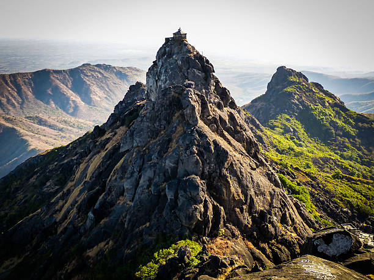
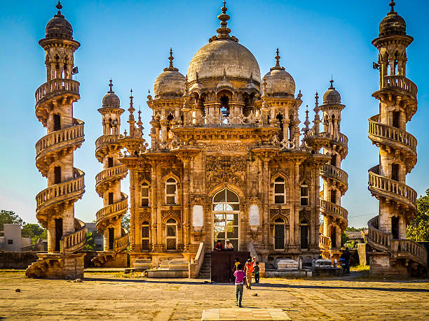
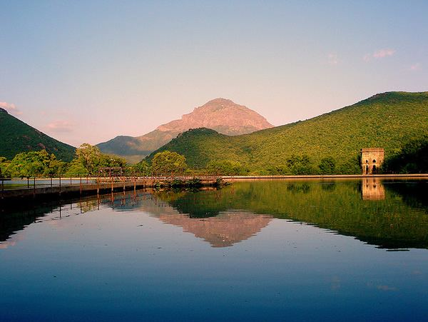
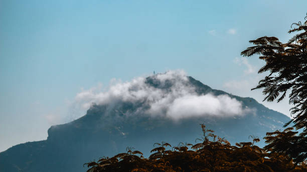
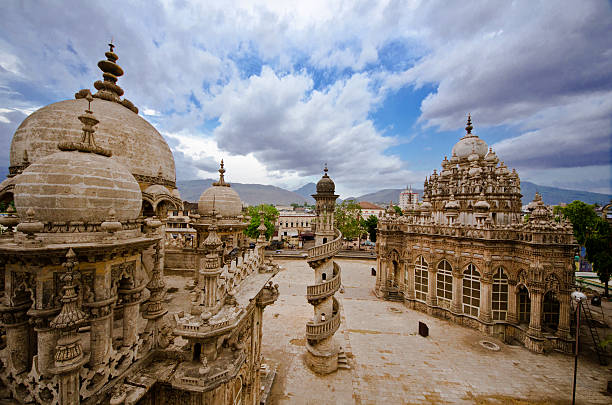

Junagadh About this soundpronunciation is the headquarters of Junagadh district in the Indian state of Gujarat. Located at the foot of the Girnar hills, 355 kilometres (221 mi) southwest of Ahmedabad and Gandhinagar (the state capital), it is the seventh largest city in the state. Literally translated, Junagadh means "Old Fort". After a brief struggle between India and Pakistan, Junagadh voted to join India in a plebiscite held on 20 February 1948. It was a part of Saurashtra state and later Bombay state. In 1960, in consequence of the Maha Gujarat movement, it became part of the newly formed Gujarat state.
    Girnar, also known as Girinagar or Revatak Parvata, is a group of mountains in the Junagadh District of Gujarat, India, situated near Junagadh. Is considered older than the Himalayas, Girnar, the mountain and its range are considered sacred. It is an important pilgrimage site for both Hindus , who gather here during the Girnar Parikrama festival. Later on some Jain temples were also built, some of which are very recent. Girnar is one of the five major ‘tirthas’ attributed to the ‘panch kalyanakas’ of various ‘Jain tirthankaras’. Girnar is also significant among Shiva devotees for the so-called “mystic space-time” of the mountain range, with the presence and turnover of different sects of Sadhu Babas, Nath sect and others. Flora and fauna fairs are also held at the mountains, such as the Maha Shivratri fair. Different Jain Tirthankaras and monks have in the past visited and practiced severe penance at the peaks of Girnar. It hosts a number of temples and some historical spots across its range.
Mahabat Maqbara Palace, also Mausoleum of Bahaduddinbhai Hasainbhai, is a mausoleum in Junagadh, India, that was once home to the Muslims rulers the Nawabs of Junagadh. The city of Junagadh has other 18th-century mausoleums built by the nawabs in the area around Chitkana Chowk.
The dam is built on the river Kalwa at the foot of the hill from where it originates. It was built as a reservoir for drinking water for the people of Junagadh. It was named after Lord Willingdon, the then Governor of India. Near the dam, the steps go up to 2,779 feet (847 m) high to the famous shrine of Jamiyal shah Datar, where both Hindu and Muslim devotees share their faith.